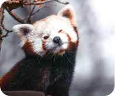

Perkenalan
Halo! Namaku adalah Ailurus fulgens atau sering disebut juga dengan Panda Merah. Aku termasuk dalam jenis binatang menyusui dalam ordo Carnivora. Salam kenal semuanya!!
 Contact Us
Contact Us
The cutest species of the bear family. Sebenarnya saya tidak tahu mau menulis apa disini, akan tetapi pokoknya Panda Merah itu kiyowok kawaii banget
Get To Know More.png)
Halo! Namaku adalah Ailurus fulgens atau sering disebut juga dengan Panda Merah. Aku termasuk dalam jenis binatang menyusui dalam ordo Carnivora. Salam kenal semuanya!!

Ciri-ciri?? hmm..., aku memiliki bulu tebal berwarna merah kecokelatan dan berkaki hitam. Wajahku berbentuk bulat berwarna putih dengan garis merah kecokelatan dari mata ke mulutnya. Tapak kakiku juga ditutupi oleh bulu berwarna putih, yang berguna untuk menjaga kehangatan tubuh serta untuk berjalan di atas permukaan salju atau es.